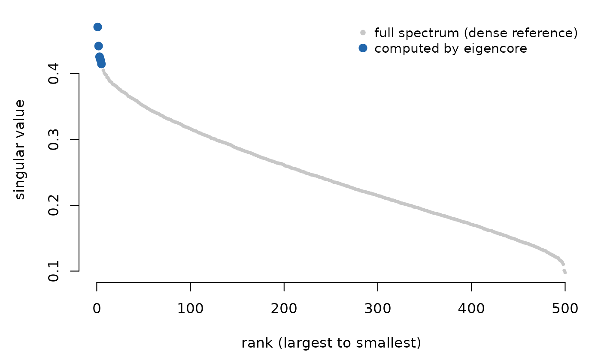

Principal component analysis starts with centering: subtract each
column’s mean before finding directions of maximum variance. For a
sparse matrix, that one subtraction is the problem.
A - 1 %*% t(col_means) fills in every zero with a small
nonzero number, so the matrix that started sparse becomes dense before
you’ve computed a single eigenvector.
eigencore solves the centered (and optionally scaled) problem as an operator, so the subtraction never happens as a stored matrix. This vignette builds one sparse dataset, centers and scales it, and computes a certified partial SVD without ever forming the dense copy.
Build a sparse dataset with a low-rank signal
Simulate the kind of matrix behind collaborative filtering and topic models: sparse interaction counts between 2,000 users and 500 items, built from five latent factors so a handful of singular vectors should recover most of the structure.
set.seed(1)
m <- 2000L; n <- 500L; k_true <- 5L
U <- qr.Q(qr(matrix(rnorm(m * k_true), m, k_true)))
V <- qr.Q(qr(matrix(rnorm(n * k_true), n, k_true)))
signal <- U %*% diag(seq(8, 4, length.out = k_true)) %*% t(V)Only 4% of user-item pairs are observed, and the observations are noisy:
mask <- rsparsematrix(m, n, density = 0.04)
noise <- rsparsematrix(m, n, density = 0.01, rand.x = function(k) rnorm(k, sd = 0.05))
A <- as((signal * (mask != 0)) + noise, "dgCMatrix")
dim(A)
#> [1] 2000 500At 2,000 x 500 this is a small matrix, but the storage gap is already visible: a dense copy would need 7.6 MB, while the sparse representation needs 0.57 MB — about 13 times less.
Center without densifying
center() wraps A in an operator that
subtracts column means on the fly, computing the means directly from the
sparse matrix rather than requiring you to supply them.
Ac <- center(A, columns = TRUE)
Ac
#> <eigencore operator>
#> name: center(sparse_csc_matrix)
#> dim: 2000 x 500
#> dtype: double
#> structure: generalPass the centered operator straight to svd_partial(),
exactly as you would the original matrix.
fit <- svd_partial(Ac, rank = 5, target = largest())
fit
#> Partial SVD
#> requested rank: 5
#> converged rank: 5
#> method: native matrix-free Golub-Kahan callback cycle + native Ritz extraction (callback boundary)
#> target: largest
#> max residual: 5.968399e-11
#> max backward error: 1.040316e-11
#> max orthogonality loss: 3.552714e-15
#> norm bound: frobenius_hutchinson_estimate
#> scale estimated: TRUE
#> certificate: failed
The five largest singular values of the centered matrix (blue) against the full singular spectrum (grey).
The five leading singular values separate cleanly from the rest of the spectrum — exactly what you’d expect from data built around five latent factors.
Read the certificate on a composed operator
fit$certificate$passed is FALSE here, but
look at why before treating that as a problem:
fit$certificate$max_backward_error
#> [1] 1.040316e-11
fit$certificate$norm_bound_type
#> [1] "frobenius_hutchinson_estimate"
fit$certificate$scale_is_estimate
#> [1] TRUEThe residual is tiny — far below the 1e-8 tolerance.
What’s withheld is the scale: computing an exact Frobenius norm
bound for a centered operator would mean a second full pass over the
data, so eigencore instead reports a stochastic (Hutchinson) estimate
and refuses to mark the certificate passed while that
estimate is the only evidence. This is the same certificate rule that
vignette("certificates") covers in detail — a composed
operator trades the exact bound for an estimated one unless you supply
norm metadata yourself, which the next section shows.
Does it match what you’d get by densifying?
The whole point of center() is that it should be
numerically indistinguishable from centering the dense matrix directly.
Check it:
The two agree to machine precision. dense_centered above
was built only to draw the comparison plot and run this check — the
eigencore computation itself never materialized it.
Scale columns too
A common next step in PCA preprocessing is scaling each column to
unit variance, turning a covariance-matrix PCA into a correlation-matrix
one. Compute the column variances from the sparse matrix and pass them
to scale_cols(), composed with the centering operator you
already have:
col_var <- Matrix::colMeans(A^2) - Matrix::colMeans(A)^2
w <- 1 / sqrt(col_var + 1e-6)
Acs <- scale_cols(Ac, w)
fit_scaled <- svd_partial(Acs, rank = 5, target = largest())
fit_scaled$d
#> [1] 75.68299 71.50447 68.85755 66.99968 65.85421center() and scale_cols() compose freely
because both return the same eigencore_operator type that
every solver accepts — there’s no separate “scaled matrix” object to
keep track of.
What did the planner actually do?
Every solve is preceded by a plan. Inspect it before the solve when method selection, densification, or fallback behavior matters:
plan <- plan_solver(svd_problem(Acs), rank = 5, target = largest())
plan$method
#> [1] "native matrix-free Golub-Kahan callback cycle + native Ritz extraction (callback boundary)"
plan$reasons
#> [1] "target: largest"
#> [2] "rectangular SVD problem"
#> [3] "adjoint is available"
#> [4] "matrix-free operator uses a native Golub-Kahan callback cycle with native Ritz extraction; sparse/matrix-free performance promotion remains gated"
#> [5] "operator uses R-level apply path in current prototype"Centering and scaling a sparse matrix still fuse into a single
native, non-densifying construction. But once that composed operator
reaches the solver, eigencore drives it through a matrix-free
Golub-Kahan callback cycle rather than a fully block-native kernel — the
reasons say so explicitly rather than leaving you to infer
it from timing. plan_solver() takes the same
problem/rank/target arguments as the solve itself, so you can always
check the plan before paying for the computation.
Going fully matrix-free
Sometimes there’s no matrix at all — just a function that knows how
to apply A and its adjoint. linear_operator()
wraps arbitrary callbacks the same way center() wraps a
sparse matrix.
op <- linear_operator(
dim = dim(A),
apply = function(X, alpha = 1, beta = 0, Y = NULL) {
# Sparse %*% dense returns an S4 dgeMatrix; as.matrix() keeps the
# callback's return type consistent with what the native solver expects.
Z <- alpha * as.matrix(A %*% X)
if (is.null(Y) || beta == 0) Z else Z + beta * Y
},
apply_adjoint = function(X, alpha = 1, beta = 0, Y = NULL) {
Z <- alpha * as.matrix(crossprod(A, X))
if (is.null(Y) || beta == 0) Z else Z + beta * Y
},
name = "matrix-free A"
)
fit_mf <- svd_partial(op, rank = 5, target = largest())
fit_mf$certificate$norm_bound_type
#> [1] "frobenius_hutchinson_estimate"Without any norm metadata, this is another stochastic-estimate
certificate. Supply the exact Frobenius norm — cheap to compute once for
a sparse matrix — and the certificate can report
passed = TRUE when its residual and orthogonality checks
also meet tolerance:
op_hinted <- linear_operator(
dim = dim(A),
apply = op$apply,
apply_adjoint = op$apply_adjoint,
name = "matrix-free A (exact norm)",
metadata = list(frobenius_norm = norm(A, type = "F"))
)
fit_hinted <- svd_partial(op_hinted, rank = 5, target = largest())
fit_hinted$certificate$norm_bound_type
#> [1] "frobenius_metadata"
fit_hinted$certificate$passed
#> [1] TRUEWhether you reach for center()/scale_cols()
or hand-write a linear_operator(), the certificate always
tells you which kind of evidence backed the result.
Why this matters at scale
The 2,000 x 500 example above keeps this vignette fast to build, but the memory argument only gets sharper as the matrix grows. A production recommender with 5 million users and 200,000 items would need roughly 8 TB to store as a dense matrix; the sparse representation, at typical interaction densities, fits in a few gigabytes. Densifying to center it would defeat the entire point of using a sparse format.
Where to go next
-
vignette("certificates")— the deep dive onpassed,scale_is_estimate, and what to do about a withheld certificate. -
vignette("eigencore")— the general get-started workflow: operators, problems, plans, and solves for both eigenproblems and SVD. -
vignette("generalized-eigenproblems")— problems of the formA v = lambda B v, including whitened and metric-weighted variants. -
?linear_operatorand?composedocument the full operator algebra, includingcrossprod_operator()for buildingA^* Awhen an eigenproblem is a more natural fit than an SVD.